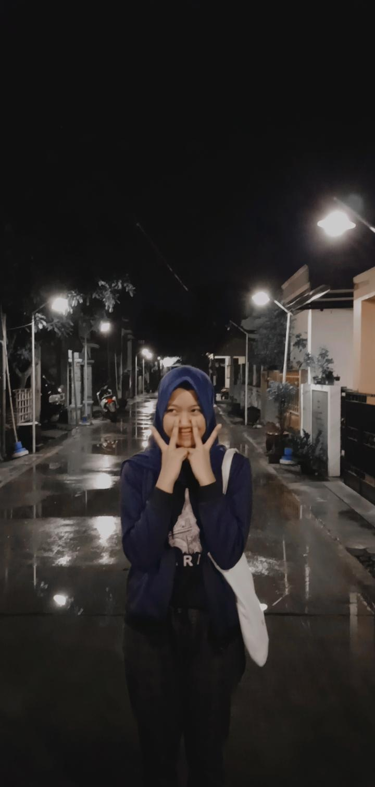

Halo, chingudeul^ ^ Namaku Gia Cinta Sabrina, tapi biasanya teman teman memanggilku dengan nama "Sarang" kenapa bisa dipanggil begitu? Yah, ceritanya panjang, hehe. Aku lahir di Padang tanggal 17 Desember 2003 dengan zodiak Sagittarius. Aku sangat suka travelling, menjelajahi hal-hal bau adalah kegiatan hidupku. Tidak suka dikekang, egois dan berjiwa santuy, itulah beberapa komentar yang aku dapat dari orang orang disekitarku, dan katanya sangat cocok dengan kepribadian zodiakku. Yasudahlah, this is me. Setelah aku lahir aku tinggal dan besar di Palembang selama 14 tahun, ya Palembang, suatu kota yang awalnya kecil tapi penuh makna dan kenangan. Dan sekarang kota itu sudah au tinggalkan, sekarang aku tinggal di Depok, dan bersekolah di SMK-SMAK Bogor. Tinggal di Depok kok sekolahnya jauh banget ke Bogor? Hmm, sepertinya pertanyaan itu yang selalu aku terima dari abang pengemudi ojol setiap mau berangkat ke sekolah.
Kenapa kok sekolahnya di Smakbo? Let say, itu buan kemauanku tapi kemauan keluarga dan orang tua. Awalnya berat, tapi kalo mau diratapi terus ya ga akan ada habisnya. Makin lama makin enjoy apalagi kalo punya temen temen yang suportif, rasanya semuanya bisa dijalani dengan enjoy. Kalo menurut aku sih, survive di sakbo itu gampang gampang susah, kuncinya cuma satu kayaknya, ikhlas dan Let it be:) oh ada satu lagi, cari kegiatan yang kita sukai dan everything is gonna be fine hehe.
Aku rasa cukup sampi disini perkenalanku. Kalau kalian ingin tahu lebih lanjut tentang keseharianku, bisa klik tombol dibawah untuk melihat profil instagramku. Terimakasih!!
Salam hangat, Sarang.
